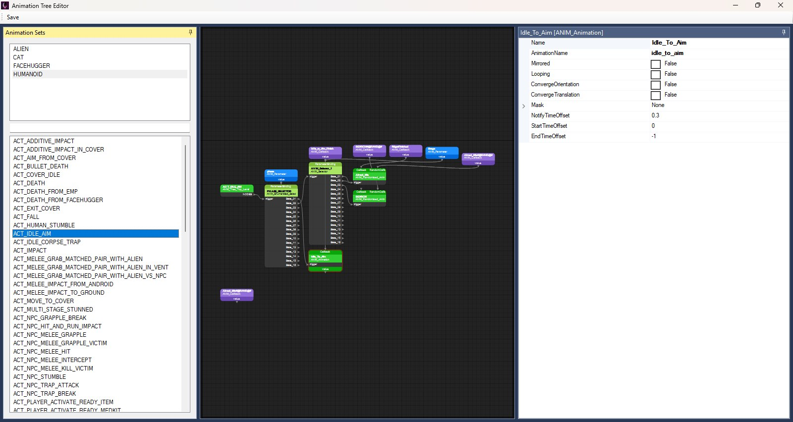
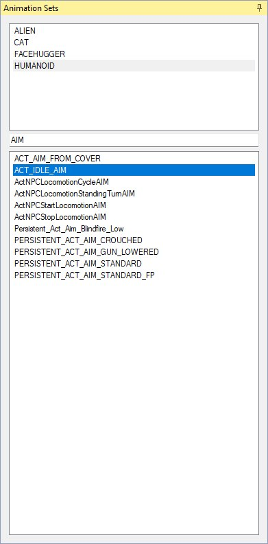
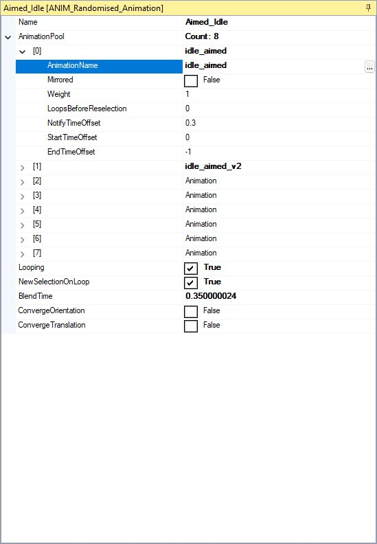
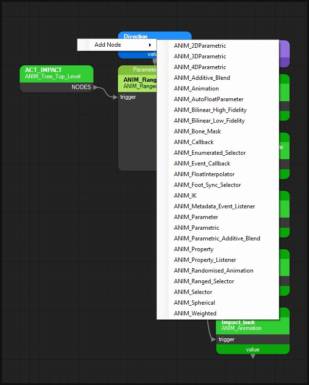
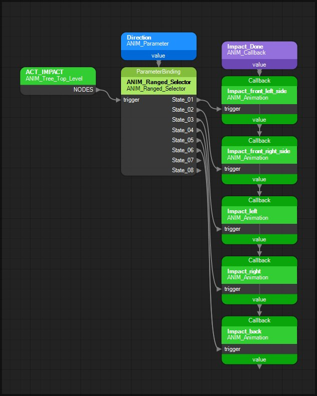

Experimental. Support for editing animation trees is early and incomplete. Expect rough edges — the editor will be improved and expanded over time.
Hardcoded parameters & callbacks. The game drives many animation trees through fixed parameter and callback names (via parameter / callback nodes). Those hooks are hardcoded in the engine — adding new ones, or renaming existing parameter / callback nodes, may do nothing or cause issues. Work with the parameters and callbacks already in the tree, and with the values they supply.
Open View → Animation Tree Editor to launch the Animation Tree Editor, shown below with a tree open. Animation trees live inside ANIMATION.PAK as ANIM_TREE_DB databases — they choose, blend, and layer clips based on parameters and game context.

The Animation Tree Editor with HUMANOID › ACT_IDLE_AIM open and the Idle_To_Aim leaf selected.
This editor is separate from the Animation Editor, which browses the clips themselves. Use this one when you need to inspect or change tree graphs, node parameters, and wiring. The first time it opens after OpenCAGE starts there is a pause of a few seconds while the contents of ANIMATION.PAK are parsed — the window appears once that finishes.
For a full catalogue of node types, parameters, and pins, see Animation Tree Nodes.
The editor uses a docked layout — see the screenshot in the Introduction: animation sets and trees on the left, the open tree's graph in the centre, and the selected node's properties on the right. Panels cannot be closed from their tabs.
Left dock — split into two unlabelled lists:
ALIEN, CAT, FACEHUGGER and HUMANOID in the retail data)Type in the box between the two lists to filter the trees by name. The match is case-insensitive, so AIM lists ACT_IDLE_AIM alongside Persistent_Act_Aim_Blindfire_Low, as shown below. Changing set clears the search and reloads that set's trees.

HUMANOID selected above, AIM typed in the search box, and the lower list reduced to the eleven HUMANOID trees whose names contain it.
Select a tree to open its graph in the centre. Only one tree is open at a time — selecting another replaces it.
The centre of the window shows the open tree as a node graph. Each node's title shows its full name with its ANIM_* type underneath, and the title colour follows the type: leaves and the tree root green, selectors pale green, parameters / properties / interpolators blue, callbacks violet, parametrics orange, additive blends lilac, bilinear blends dark purple, metadata event listeners red, and the rest (bone masks, IK, weighted, spherical, event callbacks, property listeners) white. The screenshot in Pins & Connections shows a small tree at a readable scale.
A tree nobody has laid out by hand is laid out automatically every time it opens, the same way each time, and fitted to the view. Flow runs left-to-right from the tree root (ANIM_Tree_Top_Level), and each parameter or callback sits directly above the node that reads it. A value read in several places gets a ghost — another copy of the same node — beside each reader, so no link runs across the graph. Nodes that nothing links to, such as unused parameters and listeners, sit in rows under the tree. Once you've changed a tree's layout, it opens as you left it instead: see Arranging Nodes.
A node drawn more than once has a * marker at the right-hand end of its title, as on the scripting flowgraph.
Drag with the middle mouse button to pan and roll the wheel to zoom (no modifier needed); dragging with the left button on empty space draws a selection rectangle instead. Select a node to populate the properties panel.
Zoomed out past where the titles can be read, each node is drawn in its colour with its type's icon on it, as nodes on script pages are, so a large tree can still be read at a glance. The same icons sit beside each type in the Add Node menu.
Right dock — property grid for the selected node, captioned with the node's name and type. Every node has an editable Name; other fields depend on the node type (strings, floats, bools, enums, bone-mask flags, nested arrays, and so on), as in the randomised leaf below.

Node Properties for Aimed_Idle (ANIM_Randomised_Animation): bold rows differ from the type's defaults, and the selected AnimationName row shows the picker button.
Graph wiring — children, callbacks, parameter bindings and state targets — is deliberately not listed in the grid: those are the links on the canvas, and you change them there. Values that differ from the node type's defaults are shown in bold. Rows that name an animation (AnimationName) or a blend set (BlendSet, ExtraBlendSet) get a ... button when selected, which opens the Animation Editor (limited to the tree's set) or the Blend Set Editor as a picker — or just type the name.
Pick a set and tree from the left, then edit on the graph and in the properties panel.
Click a node on the canvas to select it. The properties panel updates immediately. Multi-select follows the graph editor's normal selection behaviour where supported.
With a node selected, edit values in the right-hand grid:
AnimationPool on randomised leaves, or States on selectors / parametrics): the array row reads Count: N and expands to one row per slot, each summarised by its animation name or value — unused pool slots just read Animation, as in the Node Properties screenshot above. Empty animation pool slots are skipped on saveSee Animation Tree Nodes for which fields each type exposes.
Right-click empty canvas space and choose Add Node, then pick a type from the submenu (exact ANIM_* names, alphabetically, each with its type's icon), as shown below. The tree root cannot be added from this menu — it already exists for every tree.

New nodes are named after their type (Selector, then Selector_1 and so on), appear at the click position and are selected straight away so the properties panel shows them. Wire them into the tree by drawing links, and set parameters in the properties panel.
Drag a node with the left button to move it. The first time you change a tree's layout — moving a node, adding or removing a ghost, moving a link onto another copy, or Arrange Tree — the editor keeps that tree's layout, and from then on the tree opens with every node where you left it. Until then the tree is laid out afresh each time it opens, so nodes and links you add just find their place in it. Kept layouts are written when you save.
Right-click empty canvas and choose Arrange Tree to lay the whole tree out again, the way a tree nobody has laid out by hand is drawn, and fit it to the view. Ghosts you added yourself are removed, and new ones are added wherever a value is read far from where it sits. The result is kept as the tree's layout. There is no undo in the Animation Tree Editor, so this replaces a layout you made by hand.
If a tree has changed since its layout was kept — by a mod, say, or by a tool that doesn't know about layouts — nodes the layout doesn't have are placed beside what they link to, and nodes that are gone drop out of it.
A ghost is another copy of a node on the graph, so that a value read in several places can sit beside each node that reads it. It is still one node in the tree: every copy shows the same properties, a rename retitles every copy, and each of the node's links is drawn from one copy or another. Every copy has the * marker on its title.
To choose which copy draws a link, draw the link again from that copy. The tree already has the link, so it just moves onto the copy you drew it from — see Drawing Links. The tree root can't have ghosts.
Copy and paste work as they do on script pages, with a choice between new nodes and more copies of the same ones:
Idle becomes Idle_1). They keep the links that ran between the copied nodes, and none to anything else. They are laid out as the copied nodes were, from the cursor, and selected. You can paste into another open tree, even one in another setAn animation's context and converge parameters aren't drawn as links, so they aren't dropped: a pasted animation keeps them, reading the same parameters in the tree it was copied from, or the parameters of the same names in another tree. Parameters and callbacks you copy along with the nodes that read them are pasted as new ones under new names, which the game doesn't drive (see the note on hardcoded parameters in the Introduction): to keep a copy reading the parameters the game sets, copy just the nodes that read them and link the copies to the original parameters.
A node copied with its ghosts is pasted as one new node. What is pasted is the copied nodes as they are at the time of the paste, and a node deleted since it was copied is left out. As with added nodes, pasted animations, selectors and blends are only saved once they are linked into the tree, and a foot sync selector needs an animation on both its strike pins before the trees can be saved.
On the graph canvas:
Only the items that apply are shown: Add Node, Arrange Tree, Paste and Paste Reference on empty space (the pastes greyed out when there is nothing to paste, and Paste Reference also in any tree but the one copied from), the node items on a node (Go To Next Ghost and Delete Ghost only when it's drawn more than once), and Delete Link on a link. The tree root can't be copied, ghosted or deleted, so right-clicking it shows the empty-space items.
Pins are colour-coded by role and sit on fixed sides of each node:
trigger)State_01, base_node, NODES)value)Connect a provider's bottom value pin to a consumer's top pin. Connect flow outputs on the right to the next node's left trigger. The small tree below has all four sides in use.

HUMANOID › ACT_IMPACT: flow runs root → selector → leaves left-to-right; the parameter and callback above feed top pins from their bottom value pins.
Reading it left-to-right: the root's NODES output runs into the ranged selector's trigger; the selector's State_01 to State_05 pins fan out to the five Impact_* leaves (State_06 onwards are unused); the Direction parameter's bottom value pin feeds the selector's ParameterBinding pin on top; and the Impact_Done callback's value pin is wired to the Callback pin of all five leaves (the small triangle under every value pin is the pin's own marker, not a link). Parameter, property, callback, and similar nodes have no trigger pin — they only expose a value output.
This picture predates the current automatic layout: the leaves sit directly beneath Impact_Done, so its five links overlap into one vertical line down the column. Opened now, the tree is laid out as Graph Canvas describes.
A link you draw on the canvas changes the tree:
State_01 onwards, base_node, additive_node, child, NODES, LeftStrikeChild, RightStrikeChild) dragged onto a node's trigger makes that node its childvalue pin dragged onto a top pin binds it: a parameter into ParameterBinding, ParameterBindingX / Y / Z, WeightControlParameter, Parameter, SourceParameter or IkEffector; a callback into Callback, RandomCallback or OverflowCallback; and a node in the flow into a property listener's LeafNodeA new link replaces whatever was there before: a flow output holds one child (except the root's NODES pin, which takes any number), and a top pin reads one value. A link the tree can't hold is refused with a message saying why: the wrong kind of node for the pin, a node linked to itself, or a loop (a node made the child of something already below it).
Drawing a link the tree already has, between other copies of the same nodes, adds nothing: the link moves onto the copies you drew it between. That is how you choose which ghost draws a link.
Use the toolbar Save button in the Animation Tree Editor window — the only toolbar item, top-left in the Introduction screenshot. That closes the game if it is running, rewrites every tree database into ANIMATION.PAK, and confirms with an "Animation trees saved." message — it is separate from File → Save Level in the script editor.
The same Save writes the layouts you've made (see Arranging Nodes) into ANIMATION.PAK alongside the trees, in an entry of OpenCAGE's own that the game never reads. Because they live in the same file, the layouts always stay with the trees they draw: if a game file check puts the original trees back, your layouts go with them, and a mod made with Create a Mod that changes your trees takes their layouts with it. When the Mod Manager combines several mods, each tree keeps only a layout made for the version of it that ends up installed; any other tree is laid out automatically until you arrange it.
OpenCAGE holds ANIMATION.PAK in memory from when it starts. If the Mod Manager or a game file check changes the file while OpenCAGE is open, Save won't write over it, because that would put the old trees back. Restart OpenCAGE first; any tree changes you hadn't saved are lost.
Node names are stored in the PAK as numbers, so Save also adds the names of nodes you've added or renamed to the PAK's list of names. That is how they keep their names the next time OpenCAGE loads the trees.